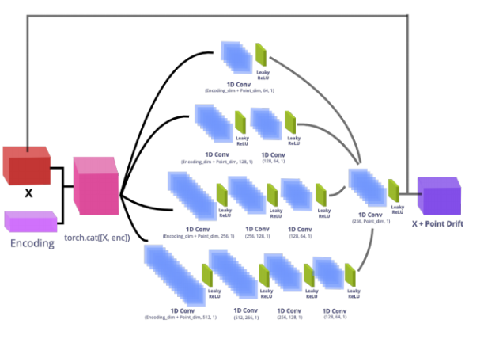
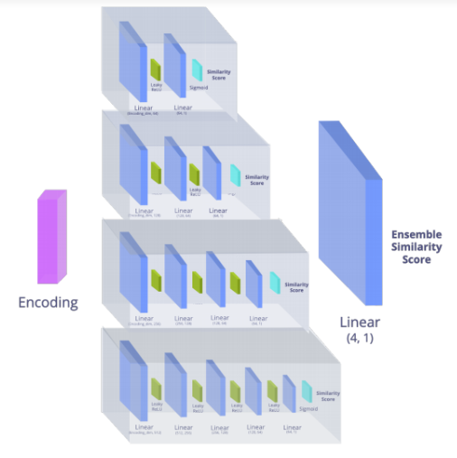
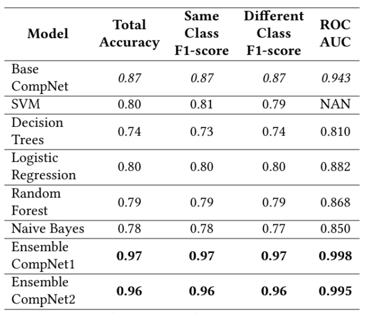

| Status: | Undergraduate Student |
| Program: | Computer Science |
| School: | New York University Abu Dhabi |
| RA Period: | From 2019-09 to 2020-05 |
| I'm an undergraduate student at New York University Abu Dhabi and a research assistant in NYU Multimedia and Visual Computing Lab, advised by Professor Yi Fang. I am broadly interested in 3D Computer Vision, Pattern Recognition and Deep Learning. |
Recent work in semantic segmentation has shown the effectiveness of context encoding in allowing neural networks to model spatial context for better performance. We set out to apply this development to the field of remote sensing. Our focus is to develop a new approach for semantic segmentation of Very High Resolution (VHR) images. This class of aerial images is often difficult to attain high quality semantic labels for, given the distinct challenges that come with images that have been remotely sensed via satellite or other aerial mechanisms. We make use of a lightweight architecture of convolutional neural networks, combined with con- text encoding to attain strong performance on the Vaihingen 2D semantic labeling competition. Our approach attains a competitive overall accuracy, as well as a strong classwise performance.
Figure 1: Ensemble AutoDecoder Network.
We propose an ensemble encoder-less decoder comparison network (Ensemble ADNet-CompNet) to extract the 3D shape descriptors or the latent vectors that define the geometric transformation between two point clouds for 3D object classification and database retrieval. Our ensemble network is inspired by the autodecoder paradigm from DeepSDF and the point-cloud pair latent vector extraction formulation from EPD-Net. The latent vector z is an embedding layer with a dimension of 256 values. These latent vectors are concatenated to each point cloud samples and fed into each of the AutoDecoders in the ensemble(Figure.1). The inputs are convolved with multiple 1D Convolutional layers paired with leaky ReLU activations. Each section in the ensemble represents a network with increasing depths to capture both local level features and global level features and more importantly to induce inde- pendence among the models. As displayed in Figure.2, the Comparison network (CompNet) is a shallow neural network with only one fully connected hidden layer. The CompNet takes the latent encoding generated by the Au- toDecoder as input and generates a class similarity score at the end of its feed-forward architecture using the sigmoid activation.
Figure 2: Ensemble CompNet Architecture.
In this section, we conduct experiments to demonstrate the effectiveness of the proposed ADNet-CompNET. We use the PointNet7 and PointNet Full and the Model-Net data for training and testing our ADNet-CompNET ensemble models. The PointNet7 and PointNet Full contain 10817-2507 and 12137-2874 train-test point-clouds with 2048 points in each cloud. ModelNet10 and ModelNet40 have 3991- 908 and 7598-1860 train-test point-clouds respectively, with each cloud having 5000 points. All point-clouds were segmented and contained a single 3D object from a distinct class. However, we could only get 33 out of the 40 classes in the ModelNet40 dataset because our .off to .npy conversion module (kaolin) could not resolve some of the .off files in the ModelNet40 dataset. The results of the latent encoding learning and class similar- ity classification task immediately show that the ensemble CompNet significantly outperforms the single CompNet architecture (EPD-Net architecture) boosting accuracy from 87% to 97%. This improvement is even more evident when we train our ADNet-CompNets on the full PointNet data as ensemble CompNets accuracy is increased to an average of 9% from 87% on the single CompNet. EPD-Net uses a deeper architecture similar to the single CompNet structure but is prone to overfitting to the training data, which would explain its lower accuracy on the classification task. As shown in Table 1, after training the AutoDecoder on 10817 samples from PointNet7, the ensemble CompNets architectures beat all other models in terms of classification accuracy by 10% on average. The accuracies of the model themselves had an average error of + 1% as accuracy fluctuates by + 1% during repetitions. We also show that our neural network models (Single and Ensemble CompNets) always outperform all other classical supervised machine learning models in terms of accuracy, f1-scores and Receiving Operator Char- acteristic Area Under Curve (ROC-AUC) for the 3D object classification task (Table 1). These results demonstrate that neural networks are highly suited to the task of 3D object classification using latent transformation encodings compared to non-neural network models.
Table 1: Metrics for the classification task on the PointNet7 dataset.